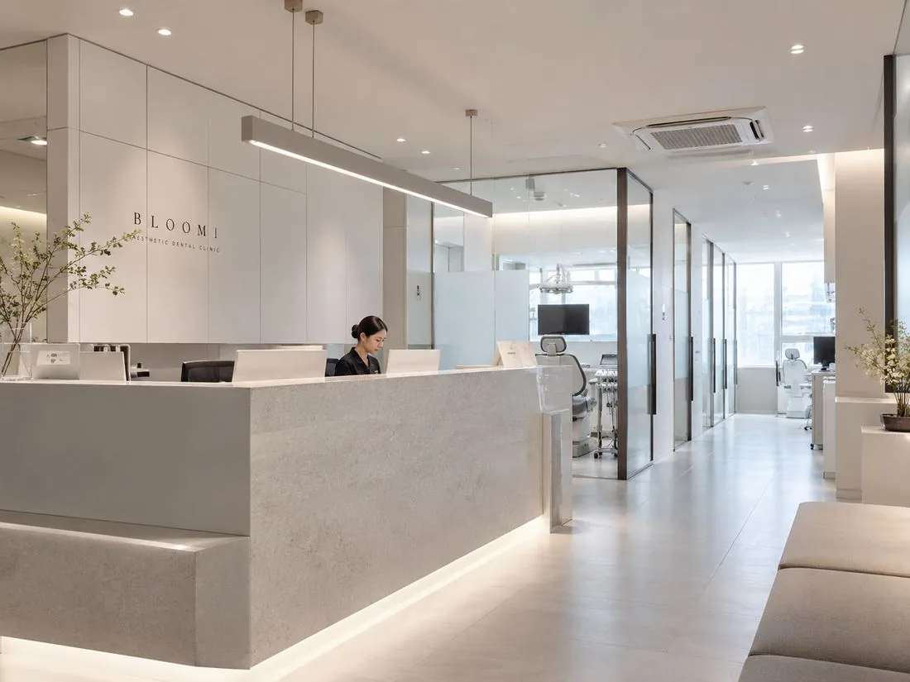

BLOOM AESTHETIC DENTAL CLINIC
자연스러운 결과는
작은 차이에서 시작됩니다.
치아를 새로 만드는 것이 아니라,
본래의 인상에 더 자연스럽게 맞추는 일.
SCROLL ↓
한 번 깎인 치아는 되돌릴 수 없기에,
BLOOM은 원칙에서 시작합니다.
삭제는 꼭 필요한 만큼만.
한 사람을 위해, 여러 사람이 함께 움직입니다.
WHY BLOOM
자연스러운 결과에는
분명한 이유가 있습니다.
원칙 이미지
원장이 치아를 관찰하고 판단하는 장면
원장이 치아를 관찰하고 판단하는 장면
01 · PRINCIPLE
많이 하기보다,
어디까지 하지 않아도 되는지를 먼저 봅니다.
치아는 한 번 삭제하면 되돌릴 수 없습니다.
그래서 필요한 범위를 먼저 신중하게 판단합니다.
02 · HARMONY
한 치아보다,
전체 인상과의 조화를 봅니다.
색뿐 아니라 형태와 비율,
주변 치아와의 연결까지 함께 맞춥니다.
주변 치아와의 조화 이미지
색·형태·비율·연결감이 함께 보이는 디테일
색·형태·비율·연결감이 함께 보이는 디테일
팀 체제 이미지
원장·기공사·위생사가 함께 보는 협업 장면
원장·기공사·위생사가 함께 보는 협업 장면
03 · TEAM
한 사람을 위해
여러 사람이 함께 움직입니다.
원장은 방향을 판단하고, 기공사는 색과 형태를 구현하며,
위생사는 준비와 유지관리를 함께합니다.
REMAKE HERO IMAGE
보철물을 다루는 손 / 제거된 기존 보철 / 세라믹 디테일
사진이 섹션의 약 60%를 차지
보철물을 다루는 손 / 제거된 기존 보철 / 세라믹 디테일
사진이 섹션의 약 60%를 차지

VISIT BLOOM
상담 한 번이면,
달라질 부분이 보입니다.
진료시간
평일 10:00 – 19:00 (점심 13:00 – 14:00)
토요일 10:00 – 15:00 · 일·공휴일 휴진
토요일 10:00 – 15:00 · 일·공휴일 휴진
주소
서울특별시 강남구 테헤란로 000, 3층
2호선 강남역 5번 출구 도보 3분
2호선 강남역 5번 출구 도보 3분
주차 안내
건물 지하주차장 이용 (진료 시 2시간 무료)